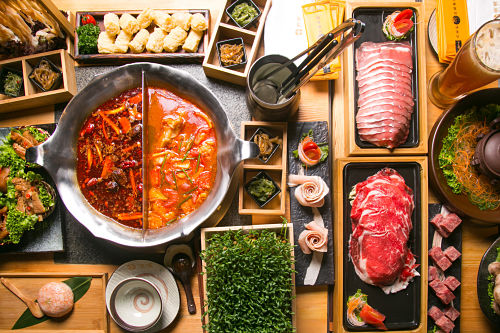
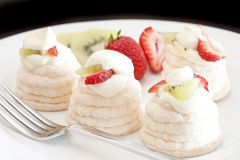
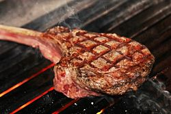
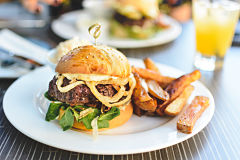
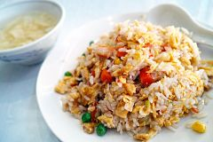
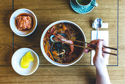
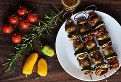

食記
選單
城市
北部地區
台北市
新北市
桃園市
基隆市
新竹縣
新竹市
中部地區
台中市
苗栗縣
彰化縣
南投縣
雲林縣
南部地區
高雄市
台南市
嘉義市
嘉義縣
屏東縣
東部地區
宜蘭縣
花蓮縣
台東縣
美食
各式料理
日式料理
韓式料理
中式料理
美式料理
義式料理
泰式料理
港式料理
關於我們
各式料理
日式料理
韓式料理
中式料理
美式料理
義式料理
泰式料理
港式料理
目標城市
臺北市
新北市
桃園市
臺中市
臺南市
高雄市
基隆市
宜蘭縣
新竹市
新竹縣
苗栗縣
彰化縣
雲林縣
嘉義市
嘉義縣
屏東縣
花蓮縣
南投縣
台東縣
澎湖縣
金門縣
今天想吃什麼?
搜尋全台多種美食
鍋類

甜點

燒烤

早午餐

中式

日式
聚會餐廳
韓式

酒吧
居酒屋
